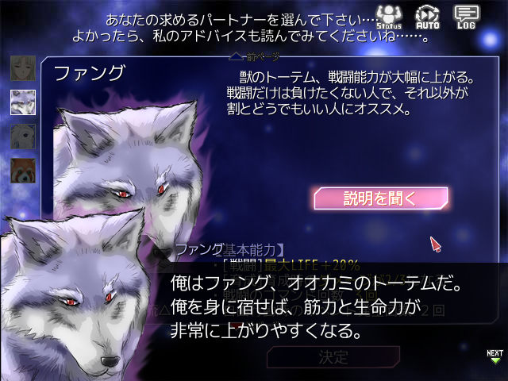
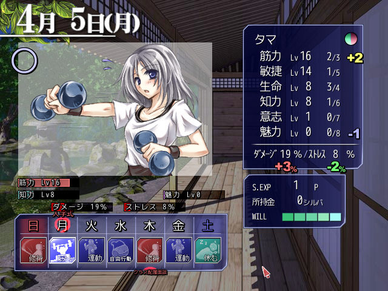
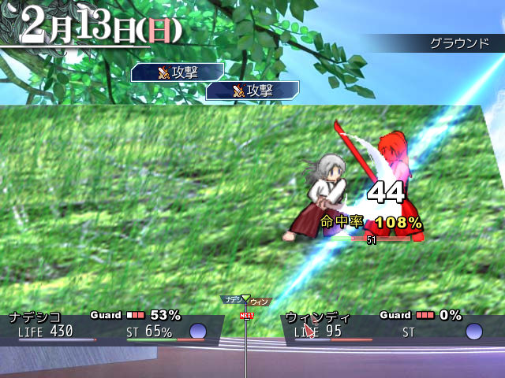

■2026-05-16 (土) 15年ぶりに遊んだ『シルフェイド学院物語』のプレイ感！ 最適化ゲームとして▼
15年ぶりくらいに『シルフェイド学院物語』をテストプレイしたら仕様をほとんど忘れていて楽しく遊べてしまったので、自分の作品の面白かったポイントを自分で評価してみるということをやってみようと思います！
ずっと「これでいいのかな～！？」と言いつつ、『不安なまま次の選択肢を選び続け、リソースの不十分感が後半まで残るゲーム』！
特に、一番シンプルな育成ゲームをしてる『武術運動部』シナリオで感じやすかったのですが、リソースや自由行動の行動回数が余るほどにはなっておらず、常にどうするか考え続ける必要があるのが個人的に熱中ポイントでした！
『限られた時間とリソースの中で、最後まで最適化したくなる作り』、それが好き！
ただし、「負けても進む構造」だったり、「周回強化要素」があったため、「不安」がそのまま「理不尽」な詰みに直結しにくいという部分も大事だった気がします。
今回はその中の細かい部分を見ていきます！
まずは『武術運動部』シナリオを中心にした全体の話を載せ、後半では公安委員会・地歴探究部にも少し触れていきます。
↓トーテム選択時
【ファング】
たとえば戦闘が得意な『ファング』は、戦闘時の行動回数が3回なので他トーテム（2回）より初期火力が1.5倍！ LIFEも1.2倍！ コマンド全部で攻撃すれば強い、防御にコマンド回せば硬い！ シンプルに超強い！
戦闘力を火力×耐久力で出すと1.5×1.2=1.8倍！ ですがコマンドの自由度が高く、攻撃数も多くて敵ガードを削り切りやすいので、実際はそれ以上に強いでしょう。
ただし「自由行動（2回行動しかできない）」に育成コマンドをたくさん消費させられる可能性があって、ほんのちょっと育成効率がダウンするかもしれません。
【アウル】
なんでもできる『アウル』は戦闘時の行動数は2回ですが、命中回避+25％！ 「見切り」効果で被攻撃のたびに回避+1％！ 「見切り」の回避上昇がかなり強いので長期戦や、攻撃回数が多くなる後半戦でも強いです。
自由行動も3回できて十分！ 育成の無駄が少なめ！ どんな戦い方でも割と強い！ 知力が高いのでフォースも得意！ もちろん回避型の方が強そうです。
【ラクーン】
ラクーンは戦闘時の行動数2回、他そんな強みなし！ 「武術運動部」に行くと泣きますが、ラクーンでもうまくプレイすれば割と勝てます。
実はラクーン、トーテム選択画面には出てないんですが近接被ダメージ-10％、敵命中率-10%、被クリティカル率-20%というお情けでもらってる感じの地味能力を持っています。実は近接戦ならファングのLIFE+20%よりかすかに硬い！
他のトーテムと違ってWILLが毎週2ポイント使えるのも無理しやすくて強い！
ただ相手を倒すのは大変なのでそこは工夫が必要！ 回避型にして、相手よりヒット数を多く取ってポイント勝ちするしかない、なんてこともあるかも。
以上3つ！ まとめると、
「ファングは戦闘でガンガン押せるタイプ」
「アウルは万能・回避＆知力重視型タイプ」
「ラクーンは弱そうに見えて、WILLと防御面で少し粘れるタイプ」
という感じ！
どれも大胆に方向性が違う割に、一番弱いはずのラクーンの「武術運動部」でも詰みレベルになるほど難しいわけでもなく、色々理解して適切に戦えばけっこういけちゃいそうなのが面白い点だと感じました。
それでも1周目ラクーン武術運動部は危険ですからね！ せめて2周目くらいからで！
にしても、戦闘中の行動回数がファングだけ最初から3回もあるとか「おいちょっと！」って思いますよこんなの！
でもいざ使ってみると激烈に強すぎはしない気がします。いやすごく強いんですけど。
こんな風に最初のトーテム選択の時点で悩む選択を迫ってきて、「このゲームはそういうゲームだぞ！」という育成方針や戦い方の悩みがすぐ始まっているのが、個人的な好きポイントの一つな感じがします。
「育成」は、足りないものを判断してそれを上げるスケジュールを組む必要があります！
武運部でも勉強もちょっとはしたほうがよい！（というか戦闘中の知力はガード回数に繋がるので重要）
お金もかなり足りない！
毎週ちょっとずつ貯金してがんばって買う展開が多かったですね。
かと思えば終盤で特定のイベントを成功させると余るほどお金が手に入ったりして、悪い意味で生々しい感じがして笑ってしまいました。
とはいえ終盤のお金はゲーム的にそこまで価値がないですから、実はいっぱいもらえてもいいんですよね（ステータス上昇アイテムや育成強化アイテムも入荷制限があるので、後半からだと買える数が限定される）
戦闘訓練で武術部ポイントを溜めるか、買い物に行くか、ランダムイベントを進めるか悩む！
新しいイベントが出てるけど今見るか悩む！ うおおどれを選べばいいんだ！
さすがに週に2回自由行動入れるのは育成ペース的にもったいない気がするし！
みたいになっていました。
特にユーザデータを入れるとイベントが増えるので、「見るイベントをどれにしようか」という迷い度がさらにアップしてアツいです。
こういうの、判断の圧があって好みです。
たとえば
●次の公式試合に出てランクを上げる
●公式試合でランク上げるにしても、ポイントを支払って飛び級を狙う
●あるいは公式試合には出ずに、同じ時期にやっている野良試合に出て技や金を得る！？
みたいな選択を、どのタイミングでどれを選ぶべきか悩めるのがとてもよい感じがしました。
情報が少ない中でギリギリの判断をしてる感！
データ忘れてたのでこの辺もちょっとドキドキ感がある中でのプレイが楽しめましたね。
↓シル学の戦闘シーン
たとえば、
●相手をダウンさせる攻撃力がなくても、ヒット回数差でポイント勝ちを狙える
●元気切れを狙って長期戦に持ち込む（元気低下するとカウント時のLIFE回復も減る）
●初手は超痛いけど、耐えられるとLIFEが低くてすぐ倒せる相手がいる
●防御寄せにして少しずつ削る戦術が効く（ヒット数が減るので試合では逆に不利なときもある）
●敵の大技が超痛いが、大技はすぐ息切れするので、最初は全力で防御する手がある
●超硬い相手でも、ガード崩しさえできれば大打撃を与えられる
●防御を捨てて一気に殴らないと勝てない、スリルあるターンが生まれる
みたいに色んな勝ち方があります。
強かったら正面からねじふせられますが、そうでなくても試合で細い勝ち筋がある。
この部分、「思っていたよりよくできてるな！」と感じたところです。
特に試合！
「ダウンさせて10カウント（カウントごとにLIFE回復）内で立てれば試合続行」という形式はボクシングを参考にしたものですが、このルールがほんとよくできてるんですよ！ ギリギリまで削ってオーバーキルを狙わないとKOできない！
さらには、「攻撃を当てた回数が多くて、相手の攻撃がほとんど当たらなければ、攻撃力が弱くてもポイント勝ちが狙える」という部分もただのパワー勝負にしない良さがあるルール！
こういったボクシング的なルールを入れたことで、シル学の試合は単なる攻撃力勝負ではなく、ダウン狙い・ポイント狙い・長期戦狙いが混ざる、という感じで、思ったより奥行きのあるものになっていたのだと感じました。
スキルの装備可能数が5つなので、どういう配分で入れるか悩めるのもなおよいです。
特に、装備する必要があるパッシブスキルがちゃんと強かったのはいいですね！
「ST向上（毎ターンのST回復力1.5倍）」みたいな地味なスキルがちゃんと活躍するゲームって、我ながら珍しいなと思ってしまいました。シル学では戦闘中に「元気」が減るとST回復しにくくなるのですが、「ST向上」を積んでいると元気が減りにくいし、減っても戦えて強い。
「自然回復（毎ターンLIFE回復）」は回復量が地味すぎるけど防御重視プレイだとしっかり長期戦のかなめになっていて強い。
「迎撃（攻撃を受けたら一定確率で反撃）」は単純に攻撃回数増やせて敵のガード削るのに有用すぎる！ などなど。
でも全部入れたら攻撃スキルと防御スキルにどう割り振るか悩む！ うおお！
そして「防御」や「回避」などの防御系のスキルも強い！ けどそれ使ったら無双できるかと思ったらそうでもない！
たとえば、試合では守りにコマンド入れすぎると攻撃回数が少ないせいで相手にポイント取られるので、守りながらでも1ダウンは狙わないといけない！
でも防御系スキルにコマンドを費やすと敵のガードが崩せなくて全然ダメージ入らない！ うおお悩む！
みたいに、意外と無敵に見えるシナジーが見つかっても、やることはしっかりやらないといけない感が残っていてアツかったですね。
もちろん慣れたら簡単と言われたらそうかもしれませんけど、久々に遊んだ範囲だと、作者でも充実したプレイ感でした。
これはバイオハザードシリーズの記事のときにも言いましたね！ 育成ゲームだと、当然出てくる不安です。
「クリアに必要な強さの水準」はどうしても一度クリアしてみないと分からないため、育成においても自由行動においても、最後まで最適解をなるべく狙っていきたいと思わせるゲーム構成になっています（といっても、さすがに超余裕になると最終ボスも楽っぽいのかなと思えてしまいますが）。
その一方で、「負けても進んでも一定の評価が得られる流れが多い」のも、安心感に繋がる大きなポイントです。これは次の項目でお話しします。
また、重要な戦闘に負けても1発アウトでバッドエンド直行ということも基本的になく、それなりの物語の結果として反映されます。
何なら、登場タイミングなどが理不尽級の相手の場合は、負けても別に悪いエンドに入ったりはしません。
これは実際に重要な戦闘で負けてしまった身としては、「あってよかった！」と感じる部分でした。
私はTRPGが好き（でもあまり遊べてない）なのですが、「全部が完璧にできなくても、失敗を含めた上でお話が進む」形式って好きなのです。
『負けてしまうこともドラマに含めたい！ 失敗することもその周の物語になる！』
というのが、私の求める理想系です。実現率はともかくとして。
で、その「失敗した上で話が続く」点ですが、なんなら私も2回くらいやられました。
その1つは、そのイベントがあることは覚えていたのに、とあるイベントで出てくる魔王に負けてしまって住居が変わる例の展開になってしまい、悲しい話になってしまいました。
でも内容を忘れていたおかげで、それでしか見られないエンドがしっかり切なく感じられて、とても印象に残りました。
自分で作っておきながら、終わった後に「この分岐を見られてよかった」と思ってしまったのです。
『負けたルートでも、ちゃんとその文脈からつながる物語がある』
これは物語を描くにあたって、今後も少しでも入れていきたいポイントです。
たとえばどんな周回要素があるかというと、
●買えるものよりは強い武器・防具・アクセサリが最初から使える
●能力を強化できる消耗品が手に入る。
●いくらかのS.EXPをもらえる消耗品が手に入る。
●特定のスキルを最初から覚えられる消耗品が手に入る。
●毎週1回ずつだけストレスを回復できる無限アイテムが手に入る。
といった感じです。
1回クリアあたり、このうちの2～3個ずつくらい入手する形になるので、次の周でフルに使っても簡単になりすぎず、絶妙な感じでした。
なお前に周回システムを搭載したフリーシナリオRPG『シルフェイド幻想譚』のほうでは、2周目からはスタート時点から割と莫大なS.EXPを持っていて、ちょっとザツに強くなりすぎていたような感じがしていました。
なので、シル学ではこういうマイルドな形にしたような記憶があります。実際、いい感じですねこれは！
他にも、知っているだけで序盤の資産が少し充実して楽になったりする要素もありますから、それも慣れた人の攻略に影響してきますね。
サラの金庫は必須！
『公安委員会』編は警察として調査しながら育成もして進めていくシナリオです。
「自由行動」で調査を進めるので、普通に考えたら「自由行動」コマンド連打しまくりすれば一瞬で事件解決できてしまいそうに思えます。
私は自由行動を4回もできるラクーンを使っていましたが、攻略ペースが分かってるので「自由行動」を週2回くらいのほどほどにしました。
でも、初見だと「自由行動」を多めに入れることになるのではないかと感じます。
ここで開発側の視点になっちゃいますが、
「公安委員会」編を「自由行動」連打しまくりで一瞬で終わるゲームにしたくない！
と思った私は、そうならないようにするべく色々考えていた記憶があって、「公安委員会」のイベントを見ると試行錯誤の跡が見えるんですよね！
たとえば、
●「自由行動」で何かをセットできるけど待たないと進まないようなイベントを複数挟む
●逆に思いっきり調べまくった方が事情が分かりやすい事件もある
●WILL（毎週1ポイント回復）を消費した方が早く終わるイベントをはさんで、【「自由行動」連打より週に1回WILL使って進めた方が「自由行動」の総回数を抑えられる】という、連打より効率的な最適解を作る！
（と思っていたがあまり実現できてなかった予感。WILL消費で4倍くらい効率が出せてもよかった）
みたいに、なんとか「自由行動」超連打一択にならないよう、メリハリを付けようと色々考えていたような気がします。
とはいえ、進められるところまでは「自由行動」をいっぱいスケジュールに突っ込むのがたいていの場面で早いんですけどね！
とにもかくにも、シル学のシステムとして「自由行動」で進行可能な課題をうまく入れるのは難しい！
遊ぶ側から見るとあっさり表現されていますが、作者視点で見ると悩んだ痕跡がいっぱいあります。
なんなら、
「調査力」みたいなポイントが毎週回復して、その範囲しか効率よく進められない、1週間に自由行動の6回分くらいまでしか効率よく調査できない（だから自由行動を連打しすぎなくていいよ）
みたいなルールを入れてもよかったかもしれませんね。
でもこれだと逆に、調査の必要がないときでも、ポイントを使い切るように「自由行動」を入れちゃうかも。
うーん難しい！ 今のままでもいいか！
という感じで、シル学では週あたり最大7回も自由行動を入れられてしまう都合上、「自由行動」で調査を進めるタイプのシナリオで連打させすぎない工夫が必要になるため、今見るとかなり悩んだ跡が見えます。
次に似たようなゲームシナリオを作るときには、システムと絡めてどう構成すべきか、また考える必要がありそうです。
このシナリオではお金がいっぱい必要になりますが、「育成で金稼ぎばっかりしていていいのか？ それで戦闘で勝てるのか？ もちろんダンジョン探索は優先的にしなければいけない気がする」みたいな、あいまいな優先度の悩みがたびたび出てきます。
「育成」コマンドを、お金を得るために費やすのか、それともちゃんと自己強化するのか。
手に入れたアイテムの何を売るのか、何なら強盗しちゃって金銭回りの不安を解消してしまうか？ など、悩みます。
ちなみに私は戦闘周りがギリギリになりすぎたせいで、シナリオ途中で1回やらかしました。いやそれでもストーリーはちゃんと進むようになってて、むしろ感心したんですけどね！
勝たなくても進むけど「あーもう少しうまくプレイできたなー」感が出るところは、今後の開発にも使える、とてもいいポイントだと思いました。
当時はあまり意識してませんでしたが、諸々のことを考えると、これが2周目以降専用のシナリオになってるのにも納得です。
ゲームバランス的にはややシビアなクラスでしたね。
実はこの「地歴探究部」のシナリオ、最終的にプレイヤーさんの最後の段階として、
『ユーザデータ作成（＝自分で世界を創る）』
に挑む立場になることを応援するお話、という立ち位置でした。すごい遠回しで伝わりにくいんですけれども！
新たな世界を創れるその人こそ、ユーザデータを作れる権能（けんのう）を持つ皆さまなのです！
（そしてまた、NPCたちはユーザデータを絶対に作れない存在だと思うと、ちょっと切なく見えるシーンもあると思います）
すでにたくさん作ってくださっているみなさまからのユーザデータも、本当にありがとうございます！
本当にすばらしい新世界をたくさん作ってくださいました！
「常に何もかも満足には足りない状況が続きつつも最善を考え続けて悩めるバランス」は、私みたいな最適化マンには非常にハマりますね！
あと「最善の結果じゃなくても一定の進行はできる」という展開が多かったので、思ったよりストレスがない！
慣れたらだんだん簡単に見えてくるのでしょうけど、知識不足の中では最後までしっかりがんばろうと思わせてくれます。
最終的に少し拍子抜けするくらい余裕があったとしても、そこまで不安を抱えて進んだぶん、達成できたときの安心感はよかったです。
そしていつも思うんですよ、リソース（シル学では「時間」）が有限であるゲームはやっぱりいい！ と！
以前にバイオハザードシリーズの話をしましたが、あれも弾薬がほぼ有限なゲームで、初周は「本当にクリアまで弾が足りるのか……？」という不安を抱えながら終わりまで駆け抜けていく必要があるゲームです。
時間制限がある育成ゲームやRPGも同じです。
有限の時間やリソースしかない中でクリアを目指すという仕組みは、たとえ最終的なバランスがゆるめであっても、それだけで最後までプレイヤーに最適化を続けさせる強い気持ちを生み出すことができます。
ただこの有限時間型、いつも言ってますが「遊び」の選択肢を取りにくくなる問題は出るので、そこは注意です！
たとえば本筋と関係ない、「世界に浸れる面白ミニゲーム」をいっぱい入れたいのにゲーム全体の時間制限がキツいゲームにしちゃうと、世界に浸れる要素を無視して攻略に走らせてしまうので相乗効果がうまく回りません！ もったいない！
でもゲームとして一生懸命に遊んで欲しいのなら、色んなものを有限にする仕組みは非常に便利です。バランス取りは難しくなりますけれどね。
一言ずつ2行にまとめると、こんな感じになるでしょう。
『有限リソース方式は最適化の意欲を生む！』
『ただし寄り道をつぶしやすいので、ゲームの目的に応じて使い分けが必要』
という感じで、当時は言語化できていなかった面白さが、今なら少し見えるようになっていて、学びがありました。
「バランスもこんなに大胆にしていいんだ！？」みたいな。
『シルフェイド学院物語』あたりまでは自分の作ってきたものの面白さがどこにあるのか分析できていなかったので、少しずつでも掘り下げて次に使えるようにしていきたいですね！
勘でザツにバランス調整してたほうが変に細かい調整をしているときより面白かったりするので、その大胆具合を意識して出せるようにしていきたいです。
というのも、私がちゃんと計算っぽいことをして作るとね、慣れてないのかバランスがカチカチなんですよ！ 『片道勇者』の無印版みたいになる！ いやあれも悪くはないんですけど！ プラスで少し改善しましたけど！
一方でシル学はカチカチ感が少ない！ 派手！ だけど勝ちパターン作ってもけっこう苦戦する！ とてもいい！
今回学べたことは、今後の自分の開発にも使っていきます！
自分がこれまで勘で作っていたものも、ちゃんと言葉にして次に活かしていきましょう！
大胆な数値設定、全然オッケー！
- ◆シルフェイド学院物語の面白かった部分
- - 【不安なまま次の選択肢を選び続け、最適化意欲が終盤あたりまで残るゲーム】
- - ●トーテムの能力差が大胆でびっくりする
- - ●「育成」の判断がそれなりにちゃんと効いてくる！
- - ●「自由行動」で行く場所に少し悩む！
- - ●強制イベント内での選択もまた悩む！
- - ●理解すると、強敵や試合にも意外な勝ち筋がある
- - ●スキルのシナジーが強力！
- - ●今の強さでクリアできるのか分からない不安が続く！
- - ●負けても進むので停滞感がない
- - ●周回要素による強化がけっこうマイルドでいい具合！
- - 【公安委員会に「自由行動」超連打への対策を悩んだ跡がある！】
- - 【地歴探究部編の様々な要素へのリソース配分の難しさ！】
- - 【余談：地歴探究部は“自分で世界を創る”ことへつながる話だった】
- ◆総評：最後まで最適化したくなる作りが好き！
◆シルフェイド学院物語の面白かった部分
【不安なまま次の選択肢を選び続け、最適化意欲が終盤あたりまで残るゲーム】
私の中の一番の感想としてはこれ！ずっと「これでいいのかな～！？」と言いつつ、『不安なまま次の選択肢を選び続け、リソースの不十分感が後半まで残るゲーム』！
特に、一番シンプルな育成ゲームをしてる『武術運動部』シナリオで感じやすかったのですが、リソースや自由行動の行動回数が余るほどにはなっておらず、常にどうするか考え続ける必要があるのが個人的に熱中ポイントでした！
『限られた時間とリソースの中で、最後まで最適化したくなる作り』、それが好き！
ただし、「負けても進む構造」だったり、「周回強化要素」があったため、「不安」がそのまま「理不尽」な詰みに直結しにくいという部分も大事だった気がします。
今回はその中の細かい部分を見ていきます！
まずは『武術運動部』シナリオを中心にした全体の話を載せ、後半では公安委員会・地歴探究部にも少し触れていきます。
●トーテムの能力差が大胆でびっくりする
ゲームが始まった時点から、トーテムの能力差がだいぶ派手でびっくりしました。↓トーテム選択時

【ファング】
たとえば戦闘が得意な『ファング』は、戦闘時の行動回数が3回なので他トーテム（2回）より初期火力が1.5倍！ LIFEも1.2倍！ コマンド全部で攻撃すれば強い、防御にコマンド回せば硬い！ シンプルに超強い！
戦闘力を火力×耐久力で出すと1.5×1.2=1.8倍！ ですがコマンドの自由度が高く、攻撃数も多くて敵ガードを削り切りやすいので、実際はそれ以上に強いでしょう。
ただし「自由行動（2回行動しかできない）」に育成コマンドをたくさん消費させられる可能性があって、ほんのちょっと育成効率がダウンするかもしれません。
【アウル】
なんでもできる『アウル』は戦闘時の行動数は2回ですが、命中回避+25％！ 「見切り」効果で被攻撃のたびに回避+1％！ 「見切り」の回避上昇がかなり強いので長期戦や、攻撃回数が多くなる後半戦でも強いです。
自由行動も3回できて十分！ 育成の無駄が少なめ！ どんな戦い方でも割と強い！ 知力が高いのでフォースも得意！ もちろん回避型の方が強そうです。
【ラクーン】
ラクーンは戦闘時の行動数2回、他そんな強みなし！ 「武術運動部」に行くと泣きますが、ラクーンでもうまくプレイすれば割と勝てます。
実はラクーン、トーテム選択画面には出てないんですが近接被ダメージ-10％、敵命中率-10%、被クリティカル率-20%というお情けでもらってる感じの地味能力を持っています。実は近接戦ならファングのLIFE+20%よりかすかに硬い！
他のトーテムと違ってWILLが毎週2ポイント使えるのも無理しやすくて強い！
ただ相手を倒すのは大変なのでそこは工夫が必要！ 回避型にして、相手よりヒット数を多く取ってポイント勝ちするしかない、なんてこともあるかも。
以上3つ！ まとめると、
「ファングは戦闘でガンガン押せるタイプ」
「アウルは万能・回避＆知力重視型タイプ」
「ラクーンは弱そうに見えて、WILLと防御面で少し粘れるタイプ」
という感じ！
どれも大胆に方向性が違う割に、一番弱いはずのラクーンの「武術運動部」でも詰みレベルになるほど難しいわけでもなく、色々理解して適切に戦えばけっこういけちゃいそうなのが面白い点だと感じました。
それでも1周目ラクーン武術運動部は危険ですからね！ せめて2周目くらいからで！
にしても、戦闘中の行動回数がファングだけ最初から3回もあるとか「おいちょっと！」って思いますよこんなの！
でもいざ使ってみると激烈に強すぎはしない気がします。いやすごく強いんですけど。
こんな風に最初のトーテム選択の時点で悩む選択を迫ってきて、「このゲームはそういうゲームだぞ！」という育成方針や戦い方の悩みがすぐ始まっているのが、個人的な好きポイントの一つな感じがします。
●「育成」の判断がそれなりにちゃんと効いてくる！
↓シル学の育成シーン
「育成」は、足りないものを判断してそれを上げるスケジュールを組む必要があります！
武運部でも勉強もちょっとはしたほうがよい！（というか戦闘中の知力はガード回数に繋がるので重要）
お金もかなり足りない！
毎週ちょっとずつ貯金してがんばって買う展開が多かったですね。
かと思えば終盤で特定のイベントを成功させると余るほどお金が手に入ったりして、悪い意味で生々しい感じがして笑ってしまいました。
とはいえ終盤のお金はゲーム的にそこまで価値がないですから、実はいっぱいもらえてもいいんですよね（ステータス上昇アイテムや育成強化アイテムも入荷制限があるので、後半からだと買える数が限定される）
●「自由行動」で行く場所に少し悩む！
「自由行動」でどのイベントを見るか結構悩みます！戦闘訓練で武術部ポイントを溜めるか、買い物に行くか、ランダムイベントを進めるか悩む！
新しいイベントが出てるけど今見るか悩む！ うおおどれを選べばいいんだ！
さすがに週に2回自由行動入れるのは育成ペース的にもったいない気がするし！
みたいになっていました。
特にユーザデータを入れるとイベントが増えるので、「見るイベントをどれにしようか」という迷い度がさらにアップしてアツいです。
こういうの、判断の圧があって好みです。
●強制イベント内での選択もまた悩む！
「武術運動部」だと特に顕著ですが、強制イベント内にも悩ませる選択があるのが好きでした。たとえば
●次の公式試合に出てランクを上げる
●公式試合でランク上げるにしても、ポイントを支払って飛び級を狙う
●あるいは公式試合には出ずに、同じ時期にやっている野良試合に出て技や金を得る！？
みたいな選択を、どのタイミングでどれを選ぶべきか悩めるのがとてもよい感じがしました。
情報が少ない中でギリギリの判断をしてる感！
データ忘れてたのでこの辺もちょっとドキドキ感がある中でのプレイが楽しめましたね。
●理解すると、強敵や試合にも意外な勝ち筋がある
これはいくらか周回した後の話になるかもしれませんが、敵の戦闘パターンや試合ルールを理解すると、意外な勝ち筋が見つかることがあります。↓シル学の戦闘シーン

たとえば、
●相手をダウンさせる攻撃力がなくても、ヒット回数差でポイント勝ちを狙える
●元気切れを狙って長期戦に持ち込む（元気低下するとカウント時のLIFE回復も減る）
●初手は超痛いけど、耐えられるとLIFEが低くてすぐ倒せる相手がいる
●防御寄せにして少しずつ削る戦術が効く（ヒット数が減るので試合では逆に不利なときもある）
●敵の大技が超痛いが、大技はすぐ息切れするので、最初は全力で防御する手がある
●超硬い相手でも、ガード崩しさえできれば大打撃を与えられる
●防御を捨てて一気に殴らないと勝てない、スリルあるターンが生まれる
みたいに色んな勝ち方があります。
強かったら正面からねじふせられますが、そうでなくても試合で細い勝ち筋がある。
この部分、「思っていたよりよくできてるな！」と感じたところです。
特に試合！
「ダウンさせて10カウント（カウントごとにLIFE回復）内で立てれば試合続行」という形式はボクシングを参考にしたものですが、このルールがほんとよくできてるんですよ！ ギリギリまで削ってオーバーキルを狙わないとKOできない！
さらには、「攻撃を当てた回数が多くて、相手の攻撃がほとんど当たらなければ、攻撃力が弱くてもポイント勝ちが狙える」という部分もただのパワー勝負にしない良さがあるルール！
こういったボクシング的なルールを入れたことで、シル学の試合は単なる攻撃力勝負ではなく、ダウン狙い・ポイント狙い・長期戦狙いが混ざる、という感じで、思ったより奥行きのあるものになっていたのだと感じました。
●スキルのシナジーが強力！
スキルの相乗効果（シナジー）が強いので、ビルドを完成させるためのスキルがすごく欲しくなる！スキルの装備可能数が5つなので、どういう配分で入れるか悩めるのもなおよいです。
特に、装備する必要があるパッシブスキルがちゃんと強かったのはいいですね！
「ST向上（毎ターンのST回復力1.5倍）」みたいな地味なスキルがちゃんと活躍するゲームって、我ながら珍しいなと思ってしまいました。シル学では戦闘中に「元気」が減るとST回復しにくくなるのですが、「ST向上」を積んでいると元気が減りにくいし、減っても戦えて強い。
「自然回復（毎ターンLIFE回復）」は回復量が地味すぎるけど防御重視プレイだとしっかり長期戦のかなめになっていて強い。
「迎撃（攻撃を受けたら一定確率で反撃）」は単純に攻撃回数増やせて敵のガード削るのに有用すぎる！ などなど。
でも全部入れたら攻撃スキルと防御スキルにどう割り振るか悩む！ うおお！
そして「防御」や「回避」などの防御系のスキルも強い！ けどそれ使ったら無双できるかと思ったらそうでもない！
たとえば、試合では守りにコマンド入れすぎると攻撃回数が少ないせいで相手にポイント取られるので、守りながらでも1ダウンは狙わないといけない！
でも防御系スキルにコマンドを費やすと敵のガードが崩せなくて全然ダメージ入らない！ うおお悩む！
みたいに、意外と無敵に見えるシナジーが見つかっても、やることはしっかりやらないといけない感が残っていてアツかったですね。
もちろん慣れたら簡単と言われたらそうかもしれませんけど、久々に遊んだ範囲だと、作者でも充実したプレイ感でした。
●今の強さでクリアできるのか分からない不安が続く！
「このペースの強化でクリアができるのか」という、最後まで残り続ける不安！これはバイオハザードシリーズの記事のときにも言いましたね！ 育成ゲームだと、当然出てくる不安です。
「クリアに必要な強さの水準」はどうしても一度クリアしてみないと分からないため、育成においても自由行動においても、最後まで最適解をなるべく狙っていきたいと思わせるゲーム構成になっています（といっても、さすがに超余裕になると最終ボスも楽っぽいのかなと思えてしまいますが）。
その一方で、「負けても進んでも一定の評価が得られる流れが多い」のも、安心感に繋がる大きなポイントです。これは次の項目でお話しします。
●負けても進むので停滞感がない
シル学は、ストーリー途中は「課題をすべてこなせなくても、そのまま話が進む」形になっています。また、重要な戦闘に負けても1発アウトでバッドエンド直行ということも基本的になく、それなりの物語の結果として反映されます。
何なら、登場タイミングなどが理不尽級の相手の場合は、負けても別に悪いエンドに入ったりはしません。
これは実際に重要な戦闘で負けてしまった身としては、「あってよかった！」と感じる部分でした。
私はTRPGが好き（でもあまり遊べてない）なのですが、「全部が完璧にできなくても、失敗を含めた上でお話が進む」形式って好きなのです。
『負けてしまうこともドラマに含めたい！ 失敗することもその周の物語になる！』
というのが、私の求める理想系です。実現率はともかくとして。
で、その「失敗した上で話が続く」点ですが、なんなら私も2回くらいやられました。
その1つは、そのイベントがあることは覚えていたのに、とあるイベントで出てくる魔王に負けてしまって住居が変わる例の展開になってしまい、悲しい話になってしまいました。
でも内容を忘れていたおかげで、それでしか見られないエンドがしっかり切なく感じられて、とても印象に残りました。
自分で作っておきながら、終わった後に「この分岐を見られてよかった」と思ってしまったのです。
『負けたルートでも、ちゃんとその文脈からつながる物語がある』
これは物語を描くにあたって、今後も少しでも入れていきたいポイントです。
●周回要素による強化がけっこうマイルドでいい具合！
周回要素でゲーム開始時からちょっと強くなれる要素があるのですが、割とささやかな強化の積み重ねなので、全力で使ってもプレイ感を壊しすぎなくて好印象でした。たとえばどんな周回要素があるかというと、
●買えるものよりは強い武器・防具・アクセサリが最初から使える
●能力を強化できる消耗品が手に入る。
●いくらかのS.EXPをもらえる消耗品が手に入る。
●特定のスキルを最初から覚えられる消耗品が手に入る。
●毎週1回ずつだけストレスを回復できる無限アイテムが手に入る。
といった感じです。
1回クリアあたり、このうちの2～3個ずつくらい入手する形になるので、次の周でフルに使っても簡単になりすぎず、絶妙な感じでした。
なお前に周回システムを搭載したフリーシナリオRPG『シルフェイド幻想譚』のほうでは、2周目からはスタート時点から割と莫大なS.EXPを持っていて、ちょっとザツに強くなりすぎていたような感じがしていました。
なので、シル学ではこういうマイルドな形にしたような記憶があります。実際、いい感じですねこれは！
他にも、知っているだけで序盤の資産が少し充実して楽になったりする要素もありますから、それも慣れた人の攻略に影響してきますね。
サラの金庫は必須！
【公安委員会に「自由行動」超連打への対策を悩んだ跡がある！】
ここからは別のシナリオについての話！ 『公安委員会』編から！『公安委員会』編は警察として調査しながら育成もして進めていくシナリオです。
「自由行動」で調査を進めるので、普通に考えたら「自由行動」コマンド連打しまくりすれば一瞬で事件解決できてしまいそうに思えます。
私は自由行動を4回もできるラクーンを使っていましたが、攻略ペースが分かってるので「自由行動」を週2回くらいのほどほどにしました。
でも、初見だと「自由行動」を多めに入れることになるのではないかと感じます。
ここで開発側の視点になっちゃいますが、
「公安委員会」編を「自由行動」連打しまくりで一瞬で終わるゲームにしたくない！
と思った私は、そうならないようにするべく色々考えていた記憶があって、「公安委員会」のイベントを見ると試行錯誤の跡が見えるんですよね！
たとえば、
●「自由行動」で何かをセットできるけど待たないと進まないようなイベントを複数挟む
●逆に思いっきり調べまくった方が事情が分かりやすい事件もある
●WILL（毎週1ポイント回復）を消費した方が早く終わるイベントをはさんで、【「自由行動」連打より週に1回WILL使って進めた方が「自由行動」の総回数を抑えられる】という、連打より効率的な最適解を作る！
（と思っていたがあまり実現できてなかった予感。WILL消費で4倍くらい効率が出せてもよかった）
みたいに、なんとか「自由行動」超連打一択にならないよう、メリハリを付けようと色々考えていたような気がします。
とはいえ、進められるところまでは「自由行動」をいっぱいスケジュールに突っ込むのがたいていの場面で早いんですけどね！
とにもかくにも、シル学のシステムとして「自由行動」で進行可能な課題をうまく入れるのは難しい！
遊ぶ側から見るとあっさり表現されていますが、作者視点で見ると悩んだ痕跡がいっぱいあります。
なんなら、
「調査力」みたいなポイントが毎週回復して、その範囲しか効率よく進められない、1週間に自由行動の6回分くらいまでしか効率よく調査できない（だから自由行動を連打しすぎなくていいよ）
みたいなルールを入れてもよかったかもしれませんね。
でもこれだと逆に、調査の必要がないときでも、ポイントを使い切るように「自由行動」を入れちゃうかも。
うーん難しい！ 今のままでもいいか！
という感じで、シル学では週あたり最大7回も自由行動を入れられてしまう都合上、「自由行動」で調査を進めるタイプのシナリオで連打させすぎない工夫が必要になるため、今見るとかなり悩んだ跡が見えます。
次に似たようなゲームシナリオを作るときには、システムと絡めてどう構成すべきか、また考える必要がありそうです。
【地歴探究部編の様々な要素へのリソース配分の難しさ！】
「地歴探究部」は、プレイにあたって一番リソース配分に悩まされましたね！このシナリオではお金がいっぱい必要になりますが、「育成で金稼ぎばっかりしていていいのか？ それで戦闘で勝てるのか？ もちろんダンジョン探索は優先的にしなければいけない気がする」みたいな、あいまいな優先度の悩みがたびたび出てきます。
「育成」コマンドを、お金を得るために費やすのか、それともちゃんと自己強化するのか。
手に入れたアイテムの何を売るのか、何なら強盗しちゃって金銭回りの不安を解消してしまうか？ など、悩みます。
ちなみに私は戦闘周りがギリギリになりすぎたせいで、シナリオ途中で1回やらかしました。いやそれでもストーリーはちゃんと進むようになってて、むしろ感心したんですけどね！
勝たなくても進むけど「あーもう少しうまくプレイできたなー」感が出るところは、今後の開発にも使える、とてもいいポイントだと思いました。
当時はあまり意識してませんでしたが、諸々のことを考えると、これが2周目以降専用のシナリオになってるのにも納得です。
ゲームバランス的にはややシビアなクラスでしたね。
【余談：地歴探究部は“自分で世界を創る”ことへつながる話だった】
そしてこれは、15年間言うタイミングがなかった作者の裏側の話です。実はこの「地歴探究部」のシナリオ、最終的にプレイヤーさんの最後の段階として、
『ユーザデータ作成（＝自分で世界を創る）』
に挑む立場になることを応援するお話、という立ち位置でした。すごい遠回しで伝わりにくいんですけれども！
新たな世界を創れるその人こそ、ユーザデータを作れる権能（けんのう）を持つ皆さまなのです！
（そしてまた、NPCたちはユーザデータを絶対に作れない存在だと思うと、ちょっと切なく見えるシーンもあると思います）
すでにたくさん作ってくださっているみなさまからのユーザデータも、本当にありがとうございます！
本当にすばらしい新世界をたくさん作ってくださいました！
◆総評：最後まで最適化したくなる作りが好き！
以上、思いついた分を書き出してみましたが、やはり一番最初の「最適化意欲が終盤まで残る作り」というまとめが、ゲーム作りにおいて特にすごく大事だなと思いました。「常に何もかも満足には足りない状況が続きつつも最善を考え続けて悩めるバランス」は、私みたいな最適化マンには非常にハマりますね！
あと「最善の結果じゃなくても一定の進行はできる」という展開が多かったので、思ったよりストレスがない！
慣れたらだんだん簡単に見えてくるのでしょうけど、知識不足の中では最後までしっかりがんばろうと思わせてくれます。
最終的に少し拍子抜けするくらい余裕があったとしても、そこまで不安を抱えて進んだぶん、達成できたときの安心感はよかったです。
そしていつも思うんですよ、リソース（シル学では「時間」）が有限であるゲームはやっぱりいい！ と！
以前にバイオハザードシリーズの話をしましたが、あれも弾薬がほぼ有限なゲームで、初周は「本当にクリアまで弾が足りるのか……？」という不安を抱えながら終わりまで駆け抜けていく必要があるゲームです。
時間制限がある育成ゲームやRPGも同じです。
有限の時間やリソースしかない中でクリアを目指すという仕組みは、たとえ最終的なバランスがゆるめであっても、それだけで最後までプレイヤーに最適化を続けさせる強い気持ちを生み出すことができます。
ただこの有限時間型、いつも言ってますが「遊び」の選択肢を取りにくくなる問題は出るので、そこは注意です！
たとえば本筋と関係ない、「世界に浸れる面白ミニゲーム」をいっぱい入れたいのにゲーム全体の時間制限がキツいゲームにしちゃうと、世界に浸れる要素を無視して攻略に走らせてしまうので相乗効果がうまく回りません！ もったいない！
でもゲームとして一生懸命に遊んで欲しいのなら、色んなものを有限にする仕組みは非常に便利です。バランス取りは難しくなりますけれどね。
一言ずつ2行にまとめると、こんな感じになるでしょう。
『有限リソース方式は最適化の意欲を生む！』
『ただし寄り道をつぶしやすいので、ゲームの目的に応じて使い分けが必要』
という感じで、当時は言語化できていなかった面白さが、今なら少し見えるようになっていて、学びがありました。
「バランスもこんなに大胆にしていいんだ！？」みたいな。
『シルフェイド学院物語』あたりまでは自分の作ってきたものの面白さがどこにあるのか分析できていなかったので、少しずつでも掘り下げて次に使えるようにしていきたいですね！
勘でザツにバランス調整してたほうが変に細かい調整をしているときより面白かったりするので、その大胆具合を意識して出せるようにしていきたいです。
というのも、私がちゃんと計算っぽいことをして作るとね、慣れてないのかバランスがカチカチなんですよ！ 『片道勇者』の無印版みたいになる！ いやあれも悪くはないんですけど！ プラスで少し改善しましたけど！
一方でシル学はカチカチ感が少ない！ 派手！ だけど勝ちパターン作ってもけっこう苦戦する！ とてもいい！
今回学べたことは、今後の自分の開発にも使っていきます！
自分がこれまで勘で作っていたものも、ちゃんと言葉にして次に活かしていきましょう！
大胆な数値設定、全然オッケー！